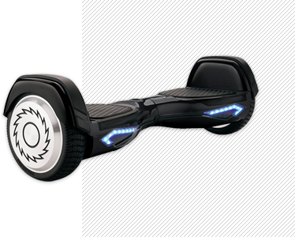
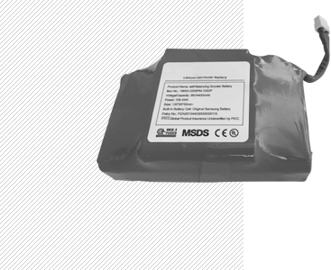

Rizor Hovertrax 4.0
Маневренность, легкость, экологичность
Преимущества
Дизайн
Внешний вид скутера дышит идеями футуризма:
- плавные линии
- подсветка светодиодными индикаторами
- рельефные бамперы, оснащенные защитными панелями
Цвет
Модель представлена сразу в нескольких цветах.
Индикаторы
Cветодиодные индикаторы сообщают окружающим о запланированном повороте. Своим мерцанием они мгновенно реагируют на смещение центра тяжести в правую или левую сторону.
Как только ваше движение продолжится по прямой, мерцание прекратится, подсветка снова станет в виде сплошной линии.
Режимы
Помимо «умной» подсветки, Hovertrax 4.0 снабжён двумя скоростными режимами.
- Один для продвинутых пользователей
- Второй для новичков
- Максимальная скорость
- 13 км/ч
- Скоростных режима
- 2
Аккумулятор
- Запас хода
- 25 км
- Время зарядки
- 2 ч
Имеет съемную аккумуляторную батарею. Это позволяет легко вытащить сам АКБ и, к примеру, перевезти весь гироборд в самолёте – это кстати единственный гироскутер, с которым проходит такой «трюк», да и есть документы, подтверждающие лицензию на его производство и использование.
Электроника
При эксплуатации
В копилку «плюсов» нужно отнести и безупречную отзывчивость электронной начинки.
-
 Бесшумный двигатель
Бесшумный двигатель - Встроенный гироскоп
Характеристики
Rizor Hovertrax 4.0

- Корпус
- выполнен из прочного пластика, и имеет приятную LED подсветку, дополняющую общий дизайн. Платформы для ног покрыты антискользящим покрытием.
- Колеса
- Rizor Hovertrax 4.0 получил относительно небольшие, но, в целом, среднего диаметра колёса в 6,5 дюймов.
- Мощность
- двигателя в 350 Вт обеспечивает комфортное и безопасное передвижение при максимальной скорости в 13 км/ч.
- Вес
- небольшой вес, приблизительно в 12 кг, позволяет относительно компактно переносить гироборд с собой.
Для кого

При максимально выдерживаемой нагрузке в 100 кг отлично подойдёт как для подрастающего поколения, так и для более взрослых «наездников».
Это единственный гироскутер со специальным детским режимом езды. Он обеспечивает плавность движения и помогает избежать большинство ошибок управления.
Для любого возраста
Безопасный режим
Отзывы
Оценки пользователей
Семён Константинопольский
Скутер понравился, пластик выглядит прочным, и подсветка приятная. Батарея держит примерно час активного катания даже спустя год. Платформа прорезиненная, сцепление хорошее, но если гонять на максималке, всё равно можно упасть.
- Общая оценка
- 5
- Надёжность
- 5
- Безопасность
- 4
- Внешний вид
- 5
Ваша оценка
Оцените использование Rizor 4.0 и получите скидку 10% на покупку второго гироскутера
Сравнение моделей
| 4.0 | 3.0 | |
|---|---|---|
| Вес | 12 кг | 16 кг |
| Нагрузка | до 100 кг | дл 80 кг |
| Скорость | до 13 км/ч | до 9 км/ч |
| Мощность | 350 Вт | 200 Вт |
| Время работы | 115 минут | 95 минут |
| Самобалансировка | + | + |
| Режим обучения | + | - |
| Гарантия | 6 месяцев | 3 месяца |